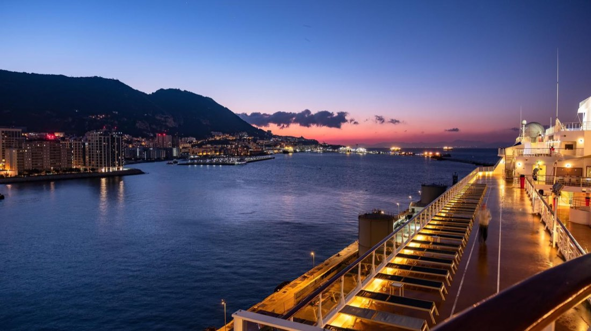

Kazablanka Turu: Tarih, Kültür, Gece Hayatı
Kazablanka: Fas'ın kalbi, Atlas'ın beyaz şehri.
Devamını oku →

İspanya’nın güney ucunda, Akdeniz’in Atlas Okyanusu’na açıldığı noktada yer alan Cebelitarık, tarih boyunca denizcilerin, tüccarların ve imparatorlukların göz diktiği stratejik bir boğazdır. Adını Müslüman komutan Tarık bin Ziyad’dan alan bu küçük yarımada, hem jeopolitik konumuyla hem de ilginç kültürel dokusuyla ziyaretçilerine eşsiz bir deneyim sunar. Bugün Birleşik Krallık’a bağlı özerk bir bölge olan Cebelitarık, İngiliz mimarisiyle İspanyol sıcaklığını harmanlayan sokakları, kırmızı telefon kulübeleri ve iki katlı otobüsleriyle adeta Londra’nın Akdeniz’e bakan balkonu gibidir.
Ancak burası sadece politik ilginçliklerden ibaret değil. “The Rock” (Kaya) adıyla da bilinen dev kireçtaşı kayası, hem doğal güzelliğiyle hem de içinde barındırdığı St. Michael Mağarası ve Berberi makaklarıyla ün salmıştır. Avrupa kıtasında vahşi doğada yaşayan tek maymun türü olan bu sevimli canlılar, Cebelitarık’ın en çok fotoğraflanan sakinleri arasında yer alır. Ayrıca boğazdan geçen gemileri izlemek, özellikle gün batımında, ziyaretçilere kartpostallık anlar sunar.
Cebelitarık, alışveriş meraklıları için de bir cazibe merkezidir; çünkü bölge gümrüksüz alışveriş imkânı sunar. Ancak en büyük zenginliği, farklı kültürlerin yüzyıllardır iç içe yaşadığı bu daracık toprak parçasının tarihsel derinliğinde saklıdır. Hem Akdeniz’in hem Atlantik’in kapısı olan bu bölgeyi gezerken bir zaman tünelinde yürüyormuş gibi hissedersiniz.
Cebelitarık küçük olabilir, ama gezilecek yerleriyle büyük bir keşif vadeder. Şehrin en çarpıcı simgesi elbette “The Rock of Gibraltar” yani Cebelitarık Kayası’dır. Bu dev kireçtaşı kayası, hem doğa severler hem de tarih meraklıları için adeta bir açık hava müzesi gibidir. Kayaya teleferikle çıkarken, altınızda Akdeniz’in büyüleyici mavisi, karşıda ise Afrika kıyıları göz kırpar. Zirveye vardığınızda ise sizi önce makaklar karşılar; Avrupa kıtasında özgürce dolaşan tek maymun kolonisi burada yaşar. Bu neşeli ev sahipleriyle karşılaşmak, özellikle çocuklu ziyaretçiler için unutulmaz bir anıya dönüşür.
Kayada mutlaka görülmesi gereken bir diğer yer ise St. Michael’s Cave. Burası bir mağaradan çok, tarih ve doğanın ortak yazdığı bir masal gibidir. İçerideki sarkıt ve dikitler, zamanın ne kadar sabırlı bir sanatçı olduğunu gösterirken, modern aydınlatmalar mağaraya adeta büyülü bir hava katar. Yaz aylarında burada konserler de düzenleniyor; düşünsenize, yerin altında klasik müzik eşliğinde bir gece!
Cebelitarık’ın en güney ucuna ulaştığınızda ise sizi Europa Point karşılar. Burası sadece bir manzara noktası değil; aynı zamanda Akdeniz’in Atlas Okyanusu’yla buluştuğu ve Afrika’nın gözle görülebildiği eşsiz bir nokta. Deniz feneri, camii ve kilise burada yan yana durur; tıpkı Cebelitarık’ın kültürel çeşitliliğini simgeler gibi.
Eğer bu etkileyici noktaları bir rehber eşliğinde keşfetmek isterseniz, fastur.com.tr üzerinden planlanan İspanya ve Fas turlarında Cebelitarık da yer alıyor. Dilerseniz turunuzu bu eşsiz noktalarla zenginleştirebilir, sadece fotoğraf değil, gerçek anılar biriktirebilirsiniz.
Cebelitarık’ın hikâyesi yalnızca insanlık tarihiyle başlamaz; bu dar kara parçası milyonlarca yıl öncesine, jeolojik devrin derinliklerine kadar uzanır. Bilim insanlarına göre Cebelitarık Boğazı, Akdeniz’in milyonlarca yıl önceki kuruması ve yeniden dolmasıyla şekillenmiş doğal bir kapıdır. Yani sadece harita üzerinde değil, gezegenin jeolojik belleğinde de özel bir yer tutar.
Tarih sahnesine çıkışı ise Fenikelilerle başlar. Antik çağda Herkül’ün Sütunları olarak bilinen kayalıklar, Akdeniz’in sonu ve bilinmeyen denizlerin başlangıcı sayılırdı. Daha sonra Kartacalılar, Romalılar, Müslüman Araplar ve Berberiler bu bölgede hâkimiyet kurdu. 711 yılında Tarık bin Ziyad, buradan Avrupa'ya ayak basarak Endülüs dönemini başlattı. İşte bu yüzden bölgeye onun adı verilmiş: “Cebel-i Tarık” yani “Tarık’ın Dağı”.
Modern dönemde Cebelitarık, özellikle deniz ticareti ve askerî kontrol açısından büyük önem kazandı. 1713’te Utrecht Antlaşması’yla İspanya tarafından İngiltere’ye bırakılan bu küçük kara parçası, yüzyıllardır İngilizlerin Akdeniz’deki ileri karakolu olmuştur. II. Dünya Savaşı’nda Atlantik ile Akdeniz arasında geçişin kilit noktası olarak büyük stratejik rol oynamıştır. Bugün bile, Akdeniz’e giriş çıkış yapan gemilerin neredeyse tamamı bu boğazdan geçmektedir.
Siyasi açıdan hâlâ sıcak bir bölge olan Cebelitarık, hem İspanya hem de Birleşik Krallık için millî hassasiyet taşıyor. Ancak turistik açıdan bakıldığında, bu çeşitlilik bölgeyi sadece tarihiyle değil, kültürel atmosferiyle de benzersiz kılıyor.
Sen de fastur.com.tr aracılığıyla planlayacağın bir İspanya-Fas gezisinde, bu tarihî mirasa birebir tanıklık edebilirsin. Bir yanda Afrika’ya göz kırpan Avrupa, diğer yanda Akdeniz’den Okyanus’a uzanan bir tarih yolculuğu…
Cebelitarık Boğazı, yalnızca iki kıta arasında değil; iki büyük medeniyet arasında da bir geçiş kapısı olmuştur. 711 yılında Kuzey Afrika’dan yola çıkan İslam orduları, tarihin yönünü değiştirecek bir hamleyle bu boğazı geçerek Avrupa kıtasına ayak bastı. Bu büyük geçişin lideri, Berberi komutan Tarık bin Ziyad’dı. Yanında yaklaşık 7.000 kişilik bir orduyla Atlantik rüzgârlarını arkasına alarak Endülüs topraklarına ilk adımı attı. O an, İslam tarihinin en büyük kültürel yayılım hamlelerinden birinin başlangıcıydı.
Tarık’ın askerî dehası sadece geçişle sınırlı değildi. Karaya vardığında, ordusunun geri dönüş ihtimalini ortadan kaldırmak için gemileri yaktırdığı rivayet edilir. Böylece savaşçılara “geri dönüş yok” mesajı verdi. Bu karar, sadece askeri bir strateji değil; aynı zamanda inanç, kararlılık ve fetih arzusunun bir sembolüydü.
İslam ordularının boğazı geçişiyle birlikte Avrupa tarihinde yepyeni bir dönem başladı: Endülüs. Bu dönem, yaklaşık 800 yıl boyunca bilim, felsefe, sanat ve mimaride altın çağlara sahne oldu. Cebelitarık, bu büyük dönüşümün kapısı, geçidin adı oldu: Cebel-i Tarık – yani Tarık’ın Dağı.
Bugün bu efsanevi yolculuğun izlerini sürmek isteyenler için bölge, tarihî bir hatıra mekânıdır. Tarık bin Ziyad’ın geçtiği kıyılarda yürümek, bir dönemin başlangıcına tanıklık etmektir. Eğer sen de bu izleri yerinde keşfetmek istersen, fastur.com.tr 'un Endülüs rotalı İspanya-Fas turları tam sana göre! Ziyaret ettiğin her noktada bir fetih hikâyesi seni bekliyor olabilir.
Cebelitarık Boğazı, sadece kıtaları değil, yüzyıllar boyunca medeniyetleri, dilleri, inançları ve yaşam tarzlarını da birbirine bağlayan bir kültürel köprü olmuştur. Afrika’dan Avrupa’ya geçen İslam ordularıyla başlayan etkileşim, zamanla iki kıtanın ruhunu şekillendirmiştir. Endülüs döneminde Müslümanlar, Hristiyanlar ve Yahudiler uzun süre bir arada yaşamış, bilimin ve sanatın altın çağlarını burada birlikte yazmışlardır.
Boğazın iki yakasında yükselen ezan sesleriyle çan sesleri uzun bir süre birlikte duyulmuş; camiler, sinagoglar ve kiliseler aynı şehir dokusunda varlık göstermiştir. Özellikle Kurtuba ve Granada gibi şehirlerde gelişen ilim merkezleri, doğuyla batı arasında bilgi alışverişini hızlandırmış; Arapça kaynaklardan Latinceye yapılan tercümeler sayesinde Avrupa Rönesansı’nın temelleri atılmıştır.
Cebelitarık Boğazı’nın bu eşsiz konumu, yüzyıllar boyunca kültürel zenginliğin ve hoşgörünün sembolü olmuştur. Bugün hâlâ hem Fas hem de İspanya kıyılarında bu etkileşimin izlerini görmek mümkündür. Geleneksel Fas mozaikleri, Arap-Andalus mimarisi, zeytin ağaçları altında yapılan dini törenler… Her şey, bu toprakların ortak hafızasına aittir.
İşte bu zengin kültürel mirası yerinde keşfetmek isteyenler için fastur.com.tr Fas’tan İspanya’ya uzanan özel turlar sunuyor. Hem Rabat’ın mistik havasını, hem Sevilla’nın zarif Flamenko ezgilerini aynı yolculukta yaşamak isteyenler için biçilmiş kaftan.
Cebelitarık Boğazı, tarihte olduğu gibi bugün de Fas ile İspanya arasında sadece coğrafi değil, politik, kültürel ve ekonomik bağların da kurulduğu bir geçiş noktasıdır. Akdeniz’in sıcak rüzgârlarıyla şekillenen bu iki ülke arasındaki ilişki, geçmişin gölgesinde, bugünün gerçeklikleriyle örülmektedir.
İspanya ve Fas, bir yandan tarihî mirasın getirdiği ortaklıklarla işbirliği içinde olurken, diğer yandan göç, sınır politikaları, ticaret ve kültürel değişim gibi konularda zaman zaman gerilimler de yaşamaktadır. Tarifa’dan Tanca’ya uzanan deniz hattı, bugün hâlâ hem resmi geçişlerin hem de göç hareketlerinin odak noktalarından biridir. Özellikle Avrupa’ya ulaşmak isteyen Afrika kökenli göçmenler açısından Fas, geçici bir durak; İspanya ise hedef ülkedir.
Ancak ilişkilerin tek boyutu bu değil. İki ülke arasında eğitim, tarım, balıkçılık, yenilenebilir enerji ve turizm gibi alanlarda ciddi iş birlikleri sürmektedir. Özellikle İspanyol turistler için Fas, egzotik ve ulaşılabilir bir destinasyon; Faslılar içinse İspanya, hem çalışmak hem de eğitim almak için cazip bir komşudur.
Kültürel düzeyde bakıldığında, Endülüs mirası hâlâ iki halkın ruhunu besler. Fas mutfağında İspanyol etkileri, İspanyol müziğinde Mağrip ezgileri hissedilir. Ortak festivaller, öğrenci değişim programları ve diplomatik ziyaretlerle ilişkiler her yıl biraz daha derinleşmektedir.
Bu köprüyü yerinde keşfetmek isteyenler için fastur.com.tr hem Fas hem de Endülüs’ü kapsayan muhteşem tur seçenekleri sunuyor. Casablanca’dan başlayıp Sevilla’ya uzanan bir rota, aslında sadece bir seyahat değil; iki medeniyetin yüzyıllardır süren diyaloğuna tanıklık etmektir.
Cebelitarık Boğazı, sadece iki kıta arasında uzanan dar bir su geçidi değildir; aynı zamanda umut ile belirsizlik, özlem ile cesaret arasında kurulan ince bir çizgidir. Afrika kıyılarından Avrupa’ya uzanan bu yolculukta binlerce insanın hayali, daha iyi bir yaşamdır. Özellikle Fas’ın kuzey sahilleri, göç rotalarının hem fiziksel hem de duygusal haritasıdır.
Fas’ın Tanca veya Nador gibi liman kentlerinde bekleyen insanlar, çoğu zaman hayatlarını riske atarak küçük teknelerle Akdeniz’e açılır. Her birinin ardında bir hikâye, bir aile, bir geçmiş ve elbette bir gelecek hayali vardır. Kimi eğitim için, kimi savaş ve yoksulluktan kaçmak için, kimi ise sadece özgürce yaşamak için bu tehlikeli yolculuğu göze alır.
Göç meselesi sadece dramlarla değil, aynı zamanda dayanışma ve umutla da örülüdür. Fas sahillerinde faaliyet gösteren STK’lar, kurtarma ekipleri, yerel halkın bazı duyarlı bireyleri bu insanlara yardım eli uzatır. Öte yandan Avrupa kıyılarında da göçmenlere destek olan yapılar, bu zorlu yolculuğun sonunda bir umut ışığı olmaya çalışır.
Cebelitarık Boğazı’nın hikâyesi, aslında göçmenlerin değil; insanlığın hikâyesidir. Sınırlar haritalarda çizilir ama yüreklerde çizilmez. İki kıta arasında gidip gelen tekneler, bir yerden bir yere değil, aynı zamanda bir duygudan bir başka duyguya da yolculuk eder.
Bu etkileyici coğrafyayı görmek, sadece doğayı değil; insanlığın derinliklerini de keşfetmek anlamına gelir. fastur.com.tr, Cebelitarık Boğazı’nı kapsayan kültür turlarıyla sizi sadece kıtalar arasında değil, duygular arasında da bir yolculuğa davet ediyor.
Cebelitarık Boğazı sadece denizcilerin değil, bilim insanlarının da merakla incelediği bir doğa harikasıdır. Bu su yolunun büyüsüne kapılanlardan biri de ünlü okyanus kâşifi ve deniz biyoloğu Kaptan Jacques-Yves Cousteau olmuştur. Akdeniz ile Atlas Okyanusu’nu birbirine bağlayan bu dar geçit, Cousteau’nun 20. yüzyılda yaptığı okyanus keşiflerinin odak noktalarından biriydi.
Cousteau, “Calypso” adlı gemisiyle defalarca bu bölgede dalışlar gerçekleştirmiş ve deniz altındaki canlı çeşitliliği, su altı akıntıları ve jeolojik yapı hakkında önemli gözlemler yapmıştır. Boğazda karşılıklı çarpışan iki farklı su kütlesinin etkisiyle oluşan ters akıntılar, Cousteau’ya göre deniz biyolojisi açısından eşsiz bir ekosistem sunuyordu. Cebelitarık, hem Atlantik’in güçlü tuzlu sularını hem de Akdeniz’in nispeten sıcak ve yoğun suyunu aynı anda barındırarak, deniz canlılarının göç yollarını, üreme alışkanlıklarını ve tür çeşitliliğini derinden etkiliyordu.
Kaptan Cousteau’nun su altı kamerasıyla çektiği görüntüler, Cebelitarık’ın yalnızca bir jeopolitik geçiş noktası değil, aynı zamanda bir doğa laboratuvarı olduğunu ortaya koydu. Bölgedeki yunus sürüleri, mercan türleri ve farklı derinlik katmanlarında yaşayan balık popülasyonları, onun raporlarında detaylı şekilde yer aldı. Bugün bile Cousteau’nun arşivleri, modern deniz biyolojisinin temel referanslarından biri olarak kabul edilir.
Cebelitarık’ın bu bilimsel yönü, meraklı gezginler için ayrı bir anlam taşır. Sadece tarihî veya kültürel bir rota değil; aynı zamanda doğayla ve bilimin izleriyle dolu bir keşif serüvenidir. Eğer siz de Cousteau’nun izinden gitmek, kıtaların kesişim noktasındaki bu doğa harikasını kendi gözlerinizle görmek isterseniz, fastur.com.tr üzerinden rehberli turlarımıza katılabilirsiniz. Cebelitarık sizi sadece kıyıda değil, suyun altında da bambaşka dünyalarla karşılayacak.
Cebelitarık Boğazı, coğrafi olarak sadece Avrupa ile Afrika'yı ayıran bir su geçidi değil; aynı zamanda küresel ticaretin atardamarlarından biridir. Akdeniz’i Atlas Okyanusu’na bağlayan bu 14 kilometrelik dar su yolu, her yıl yaklaşık 100.000’e yakın ticari gemiye ev sahipliği yapar. Bu yoğunluk, boğazı dünyadaki en işlek deniz ticareti rotalarından biri haline getirmiştir.
Cebelitarık’tan geçen gemiler, Avrupa'nın sanayi kentlerinden çıkan ürünleri Afrika'nın batı kıyılarına ulaştırırken; Latin Amerika, Orta Doğu ve Asya’dan gelen enerji kaynakları da Avrupa pazarına buradan giriş yapar. Petrol tankerleri, konteyner gemileri, otomotiv sevkiyatları ve dökme yük taşıyan dev kargo gemileri, neredeyse 24 saat boyunca bu boğazdan geçiş yapar.
İngiltere’ye bağlı Cebelitarık Özerk Bölgesi'nin limanı da bu ticaretin merkezlerinden biridir. Gemi yakıt ikmalinden bakım hizmetlerine, transit yük aktarımlarından serbest ticaret alanlarına kadar pek çok lojistik faaliyet burada yürütülmektedir. Ayrıca boğazın Fas tarafındaki Tanger-Med Limanı da son yıllarda yapılan yatırımlarla Afrika'nın en büyük limanı haline gelmiş ve Cebelitarık'ın güney kıyısını ticarette daha da güçlü bir konuma taşımıştır.
Bütün bu hareketlilik, bölgeyi sadece denizcilik ve lojistik anlamında değil, aynı zamanda diplomasi, ekonomi ve güvenlik politikaları açısından da küresel bir satranç tahtası haline getiriyor. Bu nedenledir ki, Cebelitarık Boğazı’ndan geçen bir gemi sadece mal değil, aynı zamanda strateji de taşır.
fastur.com.tr olarak bizler de bu stratejik güzergâhın kıyısındaki şehirleri, Tanca’dan Cebelitarık’a uzanan rotalarla sizlerle buluşturuyoruz. Eğer tarihî, kültürel ve ekonomik açıdan çok boyutlu bir keşfe çıkmak istiyorsanız, tur programlarımız tam size göre!
Kazablanka: Fas'ın kalbi, Atlas'ın beyaz şehri.

Fes'teki Karaouïne Üniversitesi: dünyanın en eski eğitim kurumlarından biri.

Japonya'ya gitmeden önce bilmeniz gerekenler: şehirler, lezzetler ve ipuçları.